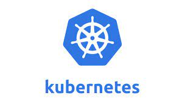

Docker
Docker é uma plataforma de software que permite a criação, teste e implementação de aplicações rapidamente. Docker empacota software em unidades padronizadas chamadas contêineres que têm tudo o que o software precisa para rodar, incluindo bibliotecas, ferramentas de sistema, código e runtime.

Kubernetes
Kubernetes é um sistema de orquestração de contêineres open-source para automatizar a implantação, escalonamento e operações de aplicações em contêineres. Foi originalmente projetado pelo Google e agora é mantido pela Cloud Native Computing Foundation.